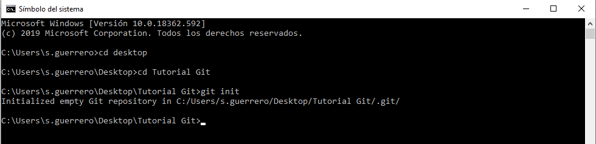
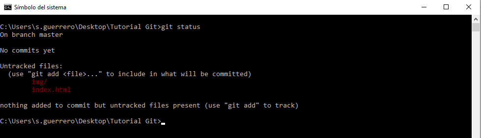

Comandos Básicos
Una vez instalado git en nuestro ordenador a traves de la pagina oficial, abrimos la consola de nuestra disposito y estamos listos para empezar.
Aquí os dejo unos comandos para empezar un proyecto git:
Configuración del usuario
Los cambios introducidos en un repositorio Git se tiene que asociar a un programador. Información que se almacena en un archivo que es válido para todos los repositorios en una cuenta de usuario. Para fijar estas opciones, solamente es necesario hacer esto una antes de utilizar Git, se pueden utilizar los siguientes comandos:
git config --global user.name "Nombre" git config --global user.email "nombre@mail.com"
En donde se ha de reemplazar Nombre por el nombre del usuario y nombre@mail.com por la dirección de correo electrónico.
Inicialización del repositorio
El primer paso es accedera un proyecto/carpeta desde la consola.
cd desktop Desktop>cd nombre de la carpeta
Una vez en la carpeta desde la consola, el primer comando que se deberá ejecutar para inicializar un repositorio es git init. Al ejecutarse crea una carpeta .git, oculta en los sistemas UNIX, donde se almacena el repositorio Git. Un repositorio es una recopilación de todos los cambios realizados en el proyecto durante la vida de este, crean un historial de los cambios.
git init
Añadir archivos al repositorio
Una vez que hemos trabajado en nuestro proyecto y antes de aprobar cualquier cambio podemos ver los archivos que tienen cambios con el comando:
git status
Para respetar el flugo de trabajo de git, tendremos que subir las modificaciones al staging area con el comando:
git add nombre del archivo o git add . (el. permite subir todos los archivos modificados a la vez)
Si hacemos un git status despues del git addpodremos comprobar que los archivos modificados han sudi subido al stating area
Añadir los archivos al repositorio local
Los archivos en el área de seguimiento se tienen que subir al repositorio local. Para lo que se utiliza el comando commit de Git seguido de un comentario. Esto es:
git commit -m "mensaje con descripción de los cambios"
Visualizar los commits
Para consultar la lista de commit se puede utilizar el commando siguiente:
git log o git log --oneline